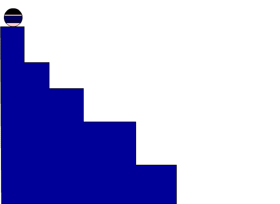

| HOME |
|---|
| BACK |
| PROCEDURE TO CREATE AN ANIMATION TO INDICATE A BALL BOUNCING ON STEPS |
STEPS: 1. Go to start- macromedia- click on flash document 2. select the line tool and draw the steps. colour it using the paint bucket tool 3. Select the circle from the tool bar and create a circle on the work area. 4. Now fill the colour to the circle using the paint bucket tool from the tool bar. 5. Go to frames right click on the first frame and choose insert key frame. slightly move the ball. Repeat the same procedure by adding new key frames to show the ball change the shape of the ball slightly when it touches the surface. 6. In order to change the shape use the free transform tool. 7. Go to control and click on test movies .you will observe the ball bouncing on steps. OUTPUT:  |